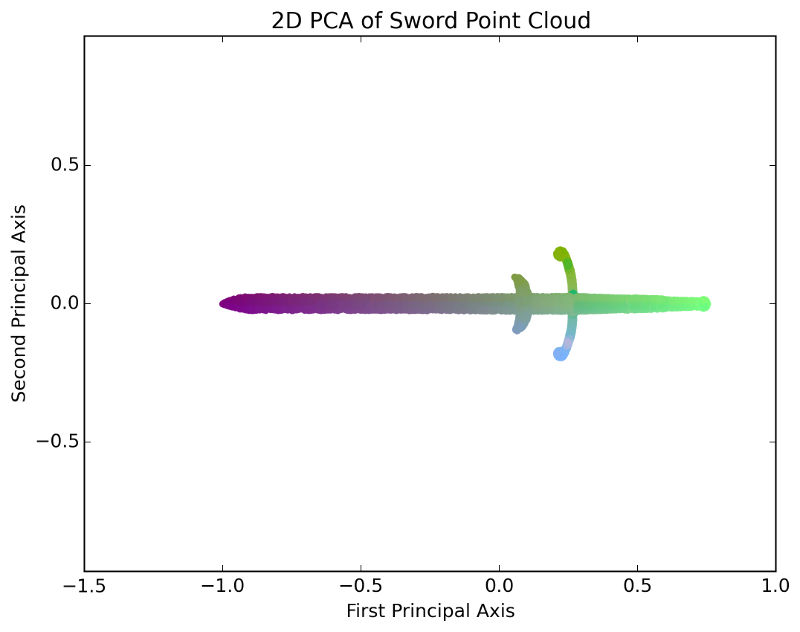
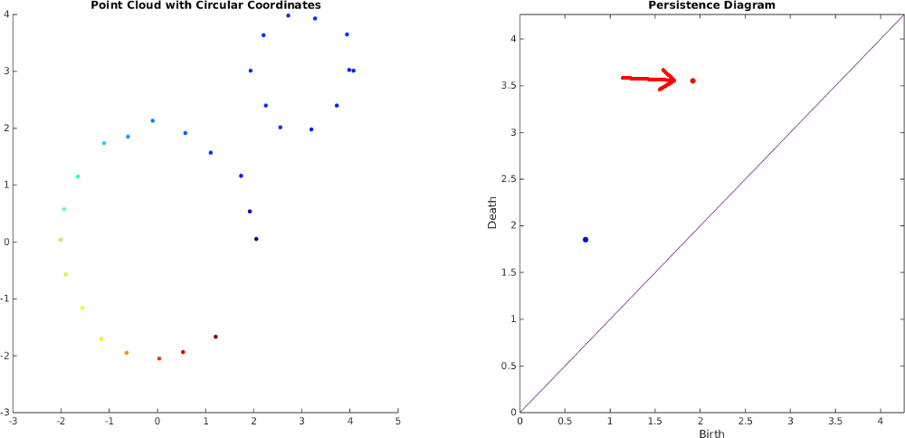

Background
Principal Component Analysis (PCA)
PCA is a technique for linear dimension reduction. It can be thought of as a generalization of linear regression to higher dimensions. In particular, PCA finds an orthogonal set of directions in the data space so that the first direction is the maximum direction of variance in the point cloud, the second direction is the maximum direction of variance after projecting away the first direction, and so on. The video below shows an example of applying PCA to a 3D point cloud of a sword. The first principal axis is drawn in red, the second is drawn in green, and the third is drawn in blue:Often, PCA is used for dimension reduction for denoising or visualization purposes by projecting the point cloud onto the subspace spanned by the first few components. The image below shows what this would look like for the above example, projecting down onto the first two principal components:

Topological Data Analysis (TDA)
Topological data analysis is used to describe multiscale information about connectivity, loops, and voids in point cloud data. In particular, 1D persistent homology is an algebraic framework for describing equivalence classes of loops as a filtration of simplicial complexes is constructed over a point cloud. For a Rips Filtration, edges are progressively added between pairs of points in increasing order of distance. When an edge is added that forms a cycle, this is called a birth event of a cycle class. Triangles are also added between three points whose edges are all in the complex, and a cycle class is said to "die" the moment all cycles in that class are expressible as boundaries of filled in triangles.
A persistence diagram summarizes all of this information by plotting the birth times on the x-axis and the death times on the y-axis, and the "persistence" of a cycle class is the death time minus the birth time. The persistence can be thought of as a measure of the importance or roundness of a cycle class. Importantly in our work, this theory works regardless of ambient dimension. The video below shows an example Rips filtration on a 2D point cloud, along with its birth and death events, which are depicted in the persistence diagram to the right
Additionally, a dual version of the theory, called persistent cohomology, is able to construct maps from the point cloud to the circle localized to a chosen class, which we use to parameterize videos with circular coordinates by finding a map of the class with the largest persistence. The image below shows circular coordinates for the cycle class with the larger persistence in the above example
